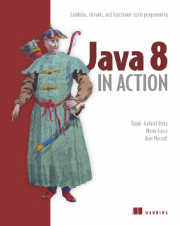
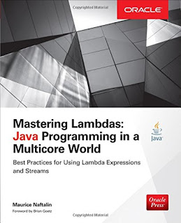

Parallel Streams 101
An overview with a peek under the hood
Piotr Ciruk / @c_piotre
java.util.stream.Stream
sequence of elements
enables functional-style processing
Streams vs Collections
no storage
do not modify source
laziness
possibly infinite
temporal - everything flows
Sample sources
arrays
collections
ranges
suppliers
files
Example
try (BufferedReader reader =
Files.newBufferedReader(Paths.get("~/.gitconfig"))) {
reader.lines()
.map(String::trim)
.filter(line -> line.contains("="))
.map(line -> line.split(" = "))
.map(items -> String.format("[%s] : [%s]", items))
.forEach(System.out::println);
} catch (IOException e) {
throw new RuntimeException(e);
}
Stream ordering
Encounter order
Set<String> set = Sets.newHashSet(
"Ala", "ma", "kota", "który", "jest", "niesforny");
System.out.println(set);
Collection<String> strings = set.parallelStream()
.map(String::toUpperCase)
.collect(toList());
System.out.println(strings);
[kota, ma, Ala, niesforny, który, jest]
[KOTA, MA, ALA, NIESFORNY, KTÓRY, JEST]
Encounter order
Can affect performance for parallel streams
Applies to terminal operations (e.g. forEach)
Unordered termination
All conditions are true:
- stream is parallel
- collector is
CONCURRENT - stream or collector is
UNORDERED
Demo
Ordering
Stream Performance
# Intel(R) Core(TM) i7-4700HQ CPU @ 2.40GHz # JMH 1.13 (released 16 days ago) # VM version: JDK 1.8.0_101, VM 25.101-b13 # Warmup: 10 iterations, 1 s each # Measurement: 10 iterations, 1 s each # Timeout: 10 min per iteration # Threads: 1 thread, will synchronize iterations # Benchmark mode: Average time, time/op
Iteration
[µs/op]
| Benchmark | Score | Error |
|---|---|---|
| SequentialIteration | 2.632 | 0.095 |
| SequentialStreamIteration | 9.548 | 0.318 |
| ParallelStreamIteration | 32.293 | 0.259 |
Map and Collect
[ms/op]
| Benchmark | Score | Error |
|---|---|---|
| SerialStreamMapping | 176.276 | 9.175 |
| ParallelStreamMapping | 1630.676 | 38.603 |
Reduce
[ms/op]
| Benchmark | Score | Error |
|---|---|---|
| SerialAddToList | 0.463 | 0.004 |
| SerialReduce | 5285.358 | 99.035 |
| ParallelAddToList | 3248.174 | 24.943 |
| ParallelReduce | 148.057 | 0.558 |
Reduce operation
example of folding
combines stream into single value
Reduce operation

Reduce operation
- identity
- accumulator
- combiner
sampleCollection.stream()
.reduce(identity, accumulator, combiner);
Reduce operation - identity
pick the correct one
present in each fork of parallel processing
immutable
Reduce operation - accumulator
accumulate item with partial result
associative (a+b)+c = a+(b+c)
Reduce operation - combiner
combines partial results
associative
Blocking calls
Demo
ForkJoinPool
implements ExecutorService
optimized for tasks spawning other tasks
employs work stealing
new ForkJoinPool(...);
// or
Executors.newWorkStealingPool(...);
Work Stealing
each worker keeps inner deque
tasks are processed in LIFO order
idle workers steal tasks in FIFO order
Common ForkJoinPool
shared within JVM
default pool for parallel streams
ForkJoinPool.commonPool();
Concurrent vs Parallel
a lot of waiting - concurrent
performance gain also on one processor
concurrency is hard :(
dividable problem domain - parallel
Concurrent vs Parallel
dividable problem domain - parallel
parallel is easy
When to use parallel streams?
independent operations
splittable source
sequential execution time exceeds threshold
When to use parallel streams?
N * Q >= 10_000
N - number of elements
Q - cost per element
Alternatives
Custom pool
Changing size of common pool
CompletableFuture
Demo
Further reading
Books
 
THE END
Questions?